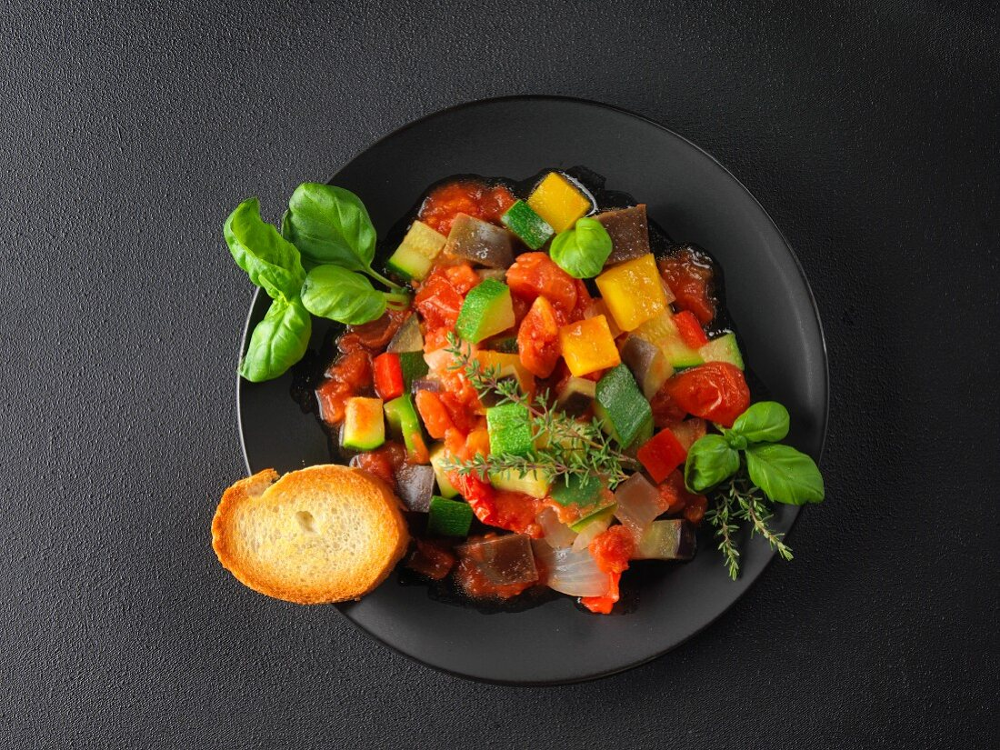

Ratatouille

From the movies to the Real Life: Ratatouille
This ratatouille recipe is my version of the terrific French vegetable
stew made with fresh tomatoes and lots of summer vegetables. It's very
versatile side dish and makes a delicious vegetarian main dish, too.
Ingredients
- 2 tablespoons olive oil, divided
- 3 cloves garlic, minced
- 1 eggplant, cut into 1/2 inch cubes
- 2 teaspoons dried parsley
- salt to taste
- 1 cup grated Parmesan cheese
- 2 zucchini, sliced
- 2 large tomatoes, chopped
- 2 cups sliced fresh mushrooms
- 1 large onion, sliced into rings
- 1 green or red bell pepper, sliced
Steps
-
Preheat the oven to 350 degrees F (175 degrees C). Coat the bottom and
sides of a 1 1/2-quart casserole dish with 1 tablespoon olive oil.
-
Heat remaining 1 tablespoon olive oil in a medium skillet over medium
heat. Cook and stir garlic until fragrant and golden brown. Add eggplant
and parsley; cook and stir until eggplant is tender and soft, about 10
minutes. Season with salt to taste.
-
Spread eggplant mixture evenly across the bottom of the prepared
casserole dish; sprinkle with a few tablespoons of Parmesan cheese.
Spread zucchini in an even layer over top. Lightly salt and sprinkle
with a little more cheese. Continue layering in this fashion, with
tomatoes, mushrooms, onion, and bell pepper, covering each layer with a
sprinkling of salt and cheese.
-
Bake in preheated oven until vegetables are tender, about 45 minutes.
Go Back